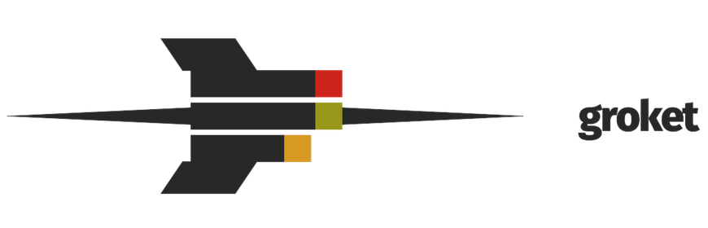
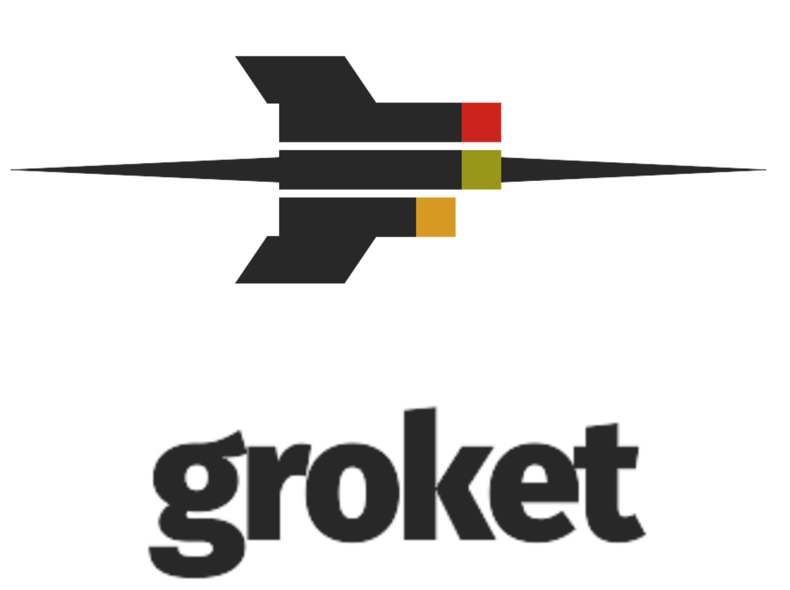
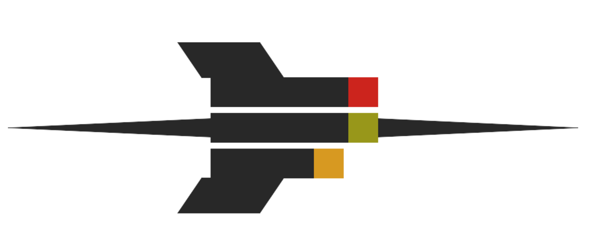
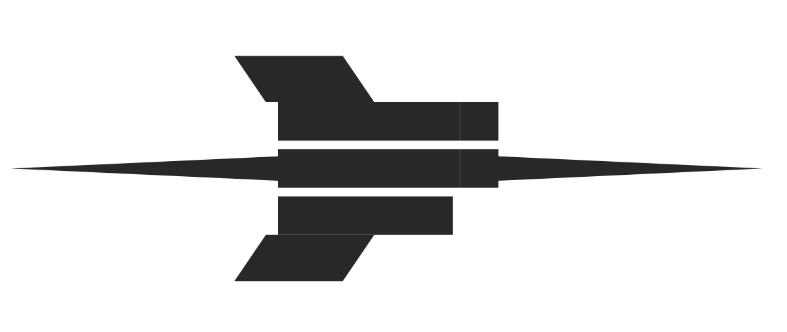
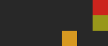
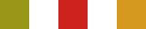
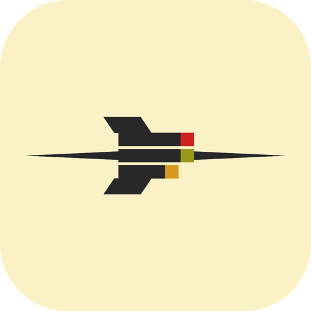
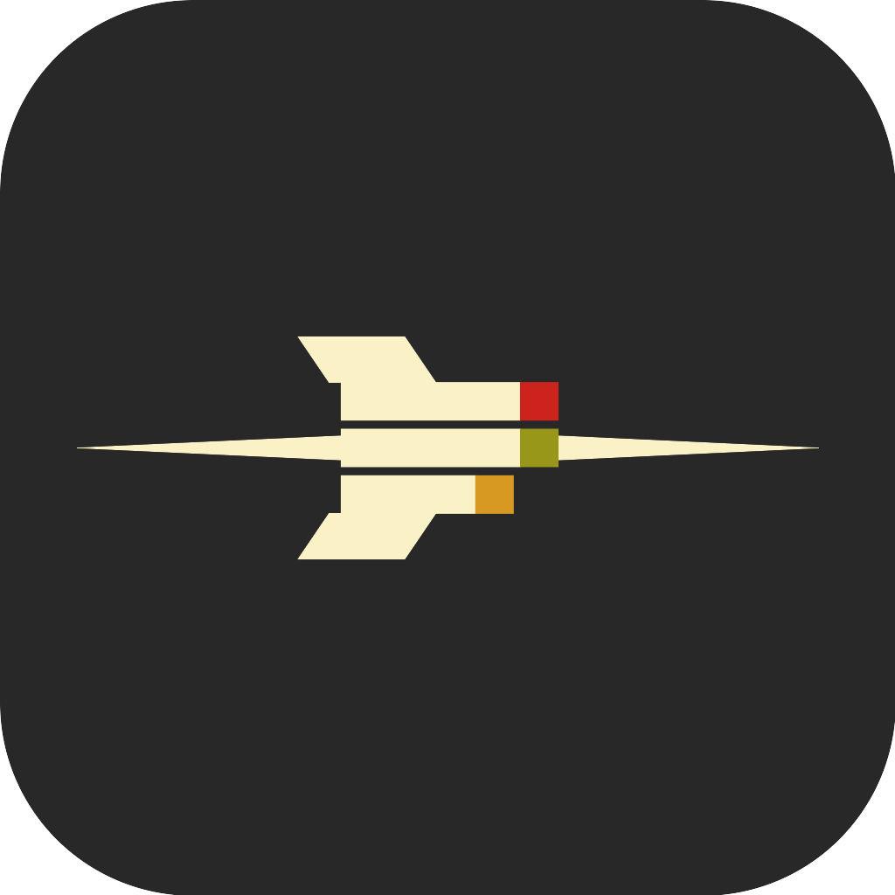

A needle rocket whose body is three turns. The nose shoots from the complete cap. The short bar is running. The other long bar is failed. Needles and fins stay ink. Colour lives on the caps.
Horizontal lockup for README and site headers. Stacked lockup when the mark sits above the name.



Three bars, three caps. The middle bar carries the nose, so that cap is complete (green). Top is failed (red). The short bar is running (yellow). The approved still is source/approved.jpg. Ship the SVG from build.py.



The small mark is the rocket with needles and fins removed. It is drawn on a 7×3 character grid so a terminal, a CLI, and a browser tab show the same picture. One cell is one █. Long bars are six cells plus a cap; the running bar is four plus a cap.
███████ ███████ █████
Same file as small.txt / svg/groket-small.svg. Do not add gaps between rows. Do not use a rocket emoji or a trigram.
When only one row exists (prompt, tight chrome), use the three caps with a one-cell gap. That is caps.txt:
█ █ █
The TUI header draws the 7×3 small mark at full size (three rows). Do not pack it with half-blocks, and do not ship a second SVG for chrome.




Ink and cream for the rocket. Caps use the three turn statuses. Gruvbox hex, screen sRGB.
#282828#FBF1C7#98971A#CC241D#D79921#928374#FFFFFFCaps stay on the bars. Needles and fins stay Ink (or Cream on a reverse field).
The word groket is Fira Sans ExtraBold 800, tracking −0.04 em, lowercase. That is the same family the HUD uses for chrome (Regular / Bold). Files live in fonts/ (SIL OFL 1.1, Mozilla and Telefónica).
| Role | Face | Weight | Tracking | Case |
|---|---|---|---|---|
| Wordmark | Fira Sans | 800 ExtraBold | −0.04 em | lowercase |
| HUD UI | Fira Sans | 400 / 700 | 0 | sentence |
| Code, hex labels | JetBrains Mono | 400 / 500 | 0 | as written |
groket
Clear space on every side equals one cap square. Digital minima (CSS pixels, mark height):
| Asset | Minimum | Preferred |
|---|---|---|
| Colour mark | 28 px | 40 px+ |
| Mono / reverse | 24 px | 32 px+ |
| Horizontal lockup | 28 px tall | 40 px+ |
| Stacked lockup | 56 px tall | 80 px+ |
| App icon | 32 px | 64 px+ |
| Small mark / TUI | 3 cells tall | 3×7 cells |
| Caps row | 1 cell | 1×5 cells |
| Favicon (square) | 16 px | 32 px |
HUD search-bar chrome uses the full mark at 32 px tall. The TUI uses the small mark or the two-line compression, never a raster of the rocket.
| Job | File |
|---|---|
| README, site header (light GitHub) | png/groket-mark.png |
| README, site header (dark GitHub) | png/groket-mark-reverse.png |
| Poster, sticker | png/groket-lockup-stacked.png |
| macOS / Linux dock (installer) | png/groket-app-icon-1024.png |
| Dark dock | png/groket-app-icon-dark-1024.png |
| HUD window / Alt-Tab / tray / notify | png/groket-tray-64.png (cream plate + ink rim + three-bar small mark; dual contrast) |
| HUD search bar, light | png/groket-mark.png (32px tall) |
| HUD search bar, dark | png/groket-mark-reverse.png |
| Browser tab | png/groket-favicon-32.png |
| TUI / CLI (3 rows) | small.txt / svg/groket-small.svg |
| One-line CLI / tight chrome | caps.txt |
| One-colour print | png/groket-mark-mono.png |
brand/ source/approved.jpg ← agreed still guidelines.html ← this book README.md build.py ← SVG mark, wordmark, rasters fonts/ ← Fira Sans ExtraBold + OFL svg/ ← geometric mark + small + lockup wrappers png/ ← usable rasters small.txt ← 7×3 Unicode small mark caps.txt ← one-line caps
Wordmark font: fonts/FiraSans-ExtraBold.ttf. Rebuild: make brand or uv run --group brand python brand/build.py. Needs the brand uv group and rsvg-convert.